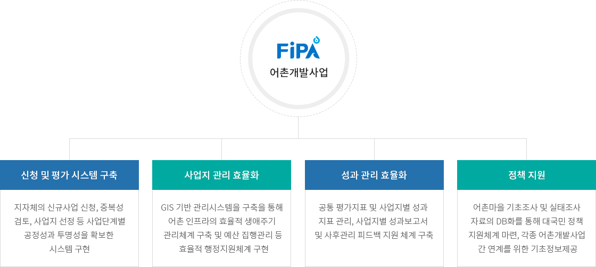
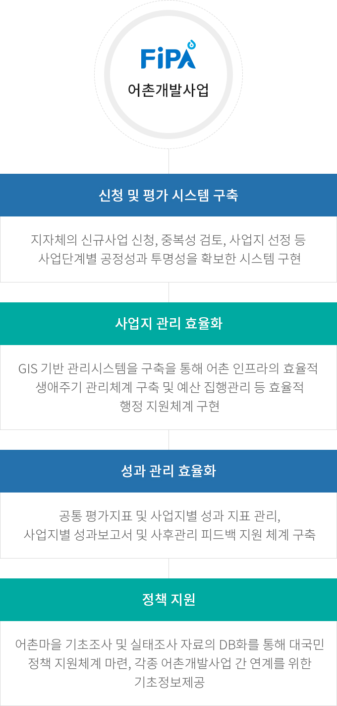

어촌개발사업 관리시스템 구축
- 홈
- 사업소개
- 활력있는 어촌
- 어촌개발사업 관리시스템 구축
사업목적
- 어촌개발사업의 성공적 추진을 위해 종합적이고 체계적인 맞춤형 생애주기 관리시스템 구축으로 업무 효율성, 투명성 제고
사업개요
| 구분 | 내용 |
|---|---|
| 사업기간 |
|
| 사업부서 |
|
사업내용


FiPA 어촌개발사업
- 신청 및 평가 시스템 구축 - 지자체의 신규사업 신청, 중복성 검토, 사업지 선정 등 사업단계별 공정성과 투명성을 확보한 시스템 구현
- 사업지 관리 효율화 - GIS 기반 관리시스템을 구축을 통해 어촌 인프라의 효율적 생애주기 관리체계 구축 및 예산 집행관리 등 효율적 행정지원체계 구현
- 성과 관리 효율화 - 공통 평가지표 및 사업지별 성과 지표 관리, 사업지별 성과보고서 및 사후관리 피드백 지원 체계 구축
- 정책 지원 - 어촌마을 기초조사 및 실태조사 자료의 DB화를 통해 대국민 정책 지원체계 마련, 각종 어촌개발사업 간 연계를 위한 기초정보제공